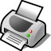
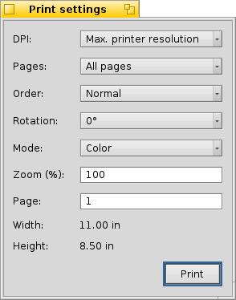

Drucken
BePDF erleichtert die Ausgabe von Dokumenten durch eine intuitive grafischer Oberfläche.
PDF Dateien lassen sich über das Menü 'Datei | Drucken' oder einen Klick auf das Druckersymbol aus der Werkzeugleiste ausdrucken. Der Dialog der Druckeinstellungen besteht aus drei Bereichen.
Allgemein
Der Allgemeine Bereich ermöglicht das Einstellen der allgemeinen Ausgabeformatierungen eines PDF Dokuments.
DPI
Bestimmt die Auflüsung in DPI (Dots Per Inch) für das Rastern einer PDF Seite. Für die beste Qualität wählt man dieselbe Auflösung die man auch in den Drucker Seiteneinstellungen vergeben hat.
Man beachte: Drucken in hoher Auflösung erfordert u.U. eine Menge Speicher.
Seiten
'Alle Seiten' druckt der Reihe nach alle Seiten des Dokuments. Mit 'Ungerade Seiten' und 'Gerade Seiten' lassen sich nur die un/geraden Seiten drucken; praktisch wenn man doppelseitig drucken will.
Reihenfolge
'Normal' oder 'Umgekehrt' bestimmt die Reihenfolge der Seiten: aufsteigend (1, 2, 3...) oder absteigend (...3, 2, 1).
Rotation
Die Angabe eines Winkels dreht das Dokument entsprechend. 0° belässt das Dokument wie auf dem Bildschirm angezeigt. Ansonsten lässt es sich in 90° Schritten gegen den Uhrzeigersinn drehen.
Modus
'Farbe' oder 'Graustufen' bestimmt, ob das Dokument farbig oder in schwarz-weiß gedruckt wird. Für farbige Ausdrucke benötigt man natürlich auch einen Farbdrucker.
Zoom
Hier lässt sich ein Zoomfaktor für den Ausdruck festlegen. 100% ist dabei die Originalgröße des Dokuments.
Seitengröße
Hier wird einem der Zoomfaktor eines Dokuments angezeigt, der sich bei einer selbst gewählten Druckseitenanzahl ergibt. Diese Funktion ist hilfreich den richtigen Zoomfaktor zu finden, um das Dokument auf eine festgelegte Anzahl von Seiten drucken möchte.
Hat man alle gewünschten Optionen gesetzt, drückt man den "Drucken" Button und der Druckprozess beginnt. Erlaubt der verwendete Druckertreiber noch zusätzliche Einstellungen, erscheint nun ein entsprechender Dialog. Sollten hier Einstellungen gemacht werden, die denen in BePDF getroffenen widersprechen, gelten die im Druckertreiber vorgenommenen.